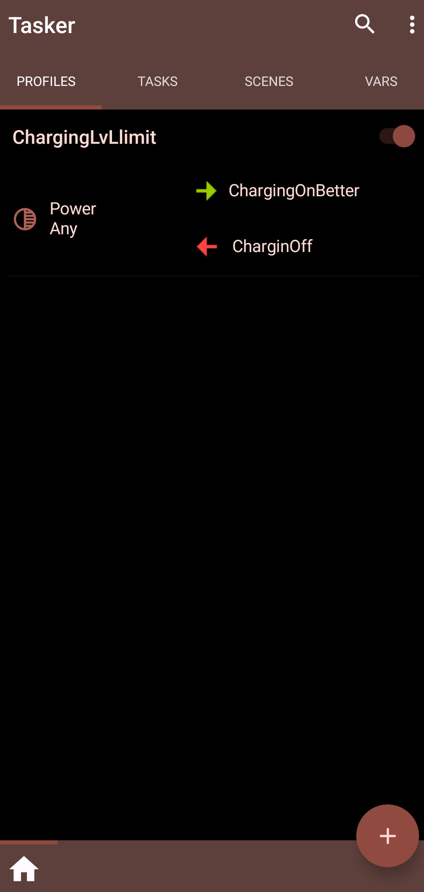
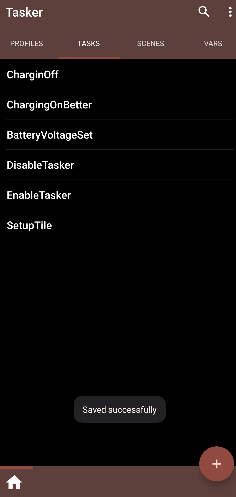
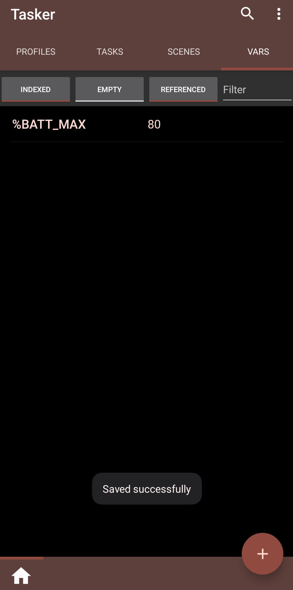

How to Take Care of Your Phones Battery (Limiting Charging Level)
1. Introduction
Modern even mid-range phones are capable of lasting for more than 2 years of usage. Their performance in terms of CPU, RAM, etc is usually high enough to use for a longer time than we were used to back in eg. 2014. In 2014 phone market was progressing much faster and a generational increase in capabilities and performance was worth the upgrade even in 1 year intervals. Not saying about 2 years.
Nowadays, things have changed and 3 years old flagship device will not be the fastest, but it will still be working just fine for 90% of daily tasks.

Figure. Battery hero: BattLisa.
Unfortunately, what is the benefit of that, if my 2-year-old phone lasts 2 hours on a single charge!? This may be the case for a lot of devices. This pushes customers to buy new devices only because the battery of old one degraded too much. Since there is no easy way to replace the battery by the user without pretty specialized tools and knowledge (it is doable, but certainly does not mean ‘easy procedure’), you are left with a device that can be most used as a photo frame permanently connected to the wall.
In this article, I will mention a few ways to prolong the battery life. I will focus on one solution which in my opinion is important -
2. A few of the solutions to mitigate the aging problem of batteries
A few of the common ways to slow down the aging process of batteries (lithium-based ones):
Charge them slowly - fast charging has a high negative impact on the battery’s life. Use slow old chargers of 5 to 10W when you don’t need fast charging. When leaving your phone to charge overnight, it does not matter if it will be full in 1h or 5h, but for your battery, it does matter, especially over a lot of charges.
Avoid extreme temperatures - both cold and high temperatures will decrease the performance. Do not leave the phone in the sun, do not charge in cold temperatures either.
Certainly, you may use you phone in a ‘lighter manner’. Since a high discharge rate has a negative impact on the battery life, using your phone less and less intensively (not gaming, etc) will help. At least it will help you, as a user. Although I do realize that modern smartphones are doing so much stuff it may be hard to restrict usage. That’s just a hint.
Do not fully charge the battery. This may be hard when users leave devices to charge overnight, but it is highly beneficial.
3. Limit max charging level of battery
Charging to 80% state of charge of the battery, or even to 90% will greatly prolong the life by increasing cycles of the battery. By cycles, it is understood charging and then discharging the cell while the stored capacity stays above the defined threshold (minimum capacity).
3.1. AccuBattery app
An easy way is to charge the device during the day and leave it in a power-saving mode for the night. Not everyone will have that much discipline, time and dedication to do so. To help, there is an app called AccuBattery which will monitor the charging process and notify users when charging reaches a certain level. But to disconnect charging - that is a user’s task.
3.2. External solution - DIY way using XY-WFUSB
To automate this process, some manufacturers equipped options in device settings to limit the charge level. But this is not common.
To make it work, it is needed to get some kind of a relay that can be triggered by a phone.
 Figure. Sinilink USB Switch Module (XY-WFUSB).
Figure. Sinilink USB Switch Module (XY-WFUSB).
For such a service there exists a XY-WFUSB dongle. It is a simple device that can switch the USB supply electrically. By plugging one end into the charger and the other into the charged device, it can be wirelessly engaged to start or stop the charging process. It can switch any USB-connected device. More details can be found here.
3.3. Flashing with Tasmota
This is a Chinese device that comes equipped with some Aliexpress-special app. Personally, I did not even bother to install the app, since I don’t trust Chinese app for such devices. I am not saying this app will not work, but I prefer to flash open-source firmware called Tasmota. It not only gives me more options but also works only locally and independently from a cloud. Unfortunately, the flashing process may be hard for some.
It is needed to open the device (case pieces are held just by friction, but be careful not to damage pins). Then it is required to solder pins to the tiny 1mm pitch header. It is tricky to solder the wires. There exist other methods of programming, like pogo pins, needles or soldering a right header. If you don’t seem to be discouraged, I try to guide you through the process.
Video for visualization: here.
One other way can be to strip ethernet cable, stripping the insulation to the length of board thickness. Inserting ends into the holes and pressing with fingers to make sure they do make contact.
Since you only have to be successful one time and, if you fail, just try again - it should not be that hard.
Personally, I just soldered the wires, but it’s not that easy if you don’t have soldering experience.
Soldered wires need to be connected into serial to USB converter. Pin IO0 should be connected to GND, so ESP (microcontroller controlling the device) is put into flashing mode. GND is GND, Rx goes to Tx, Tx goes to Rx, 3v3 is power so it goes to 3v3 on the converter. For the Rst, it should be the same but sometimes converters do not come with this pin, in such a case buy one that has or you may be successful by shorting Rst pin with GND in ‘right’ time. ‘right’ time is pretty much undefined unless you read the documentation od ESP microcontroller. More or less: start flashing and reset the microcontroller. You may be successful after a couple of tries.
 Figure. Pinout for the converter.
Figure. Pinout for the converter.
You can flash manually or by using the Tasmotizer software (recommended way).
When software flashing is successful you may connect the dongle to the USB power to check for Wi-Fi network called Tasmota_something is present. If yes, disconnect the programming pins and close the case.
3.4. Configuring Tasmota
Tasmota has a lot of features. To access them it is needed to find the local IP address of the device. first time when connected to the Tasmota_something head over to http://192.168.4.1 and provide your local Wi-Fi name and password. After a restart, your board should be connected to your own network. Now, to access it, it is required to find its local IP address. You can do it by checking your router’s configuration, or by using an app. On Linux it can be nmap, on Windows there is an Angry IP Scanner, on Android you can use PingTools from Playstore. Go to the local network and click refresh. IPs of all devices should be displayed. If you have a lot of devices you can disconnect Tasmota from power and see which IP has disappeared.
Once, you’ve found the IP paste it into your browser address bar and click Enter. You should be presented with a screen similar to the one below.
The first thing we want to do is to apply the configuration template. The one we need:
1 | {"NAME":"XY-WFUSB","GPIO":[1,1,0,1,32,224,0,0,0,0,320,0,544,0],"FLAG":0,"BASE":18} |
from here. We need to paste it into the Configuration > Configure Other > Template, and check Activate box below. This tells Tasmota which pins are connected to what on the PCB, so that we can use them properly.
You can make yourself comfortable with the rest of the settings - there is a lot of stuff to change and tweak. One with that should be checked is if the relay works. Head over to the main page, and click Toggle - the red LED should light up when in On position.
More configuration instructions can be found here and in 9999 other places.
Now, let’s automate the process of turning this relay on and off depending on the percentage of the battery.
3.5. Android app automation using Tasker (Paid)
Tasker is a pretty old Android app that allows you to automate stuff, like turning on Wi-Fi and disabling mobile data when you get back home, turning on specific application when connected via Bluetooth with some device - possibilities are endless. It can easily check phone battery and based on this use http request to turn Tasmota on and off as needed. Fortunately, Tasmota has the option to do so without using the web interface. Just paste these two strings into the web browser:
http://192.168.X.Y/cm?cmnd=Power%20On (on)
and
http://192.168.X.Y/cm?cmnd=Power%20off (off)
Recall %20 to be there since some programs replace it with space-sign automatically. Also, replace 192.168.X.Y with your own address.
I prepared the required Profiles, Tasks and Variables, so any can just import them to use.
During the initial setup of Tasker select Tasker - The full experience. Than, Select Three dots > Data > Restore and select my config which can be downloaded on below.
The rest of the instructions are visualized below.
|  |  |  |
| Profiles section is responsible for engaging action (Tasks) upon some action happening, like connection to the charger. There is start (green) and end (red) Task. | Tasks are doing the work, like monitoring battery state, location, functions, etc. They are responsible for actions directly. | Variables section stores variables. DO NOT change the default 80% here, use Task "BatteryVoltageSet" (Run icon on the bottom left). |
It is needed to enable Tasker, by tapping 3 dots and selecting Enable Tasker. If the default 80% max charge voltage is too small of a percentage, there is a Task called BatteryVoltageSet which needs to be edited. DO NOT change the variable %BATT_MAX in Vars section.
Remember to change your IP address (replacing X and Y) ChargingOff and ChargingOnBetter Tasks.
SetupTile is used to set the quick toggle tile in the functions of your Android phone (the area where quick access to functions is, right above notifications). Since Tasker will run in the background and most of the users will not use it (at least initially) for anything else, there is no need to keep it in the background. This tile can be clicked every time the phone is connected to a charger. Remember to click the button on the Tasmota device to activate charging! After charging is completed Tasker will be deactivated.
Download Files: Tasker configuration
3.6. Android app automation using Automate (Free)
Automate is more of a user-friendly app desige to do similar things as Tasker. It can be installed from the Play Store for free in basic version. You can create automations with use of simple building blocks which are simpler to manage for less-tech oriented persons.
On the main screen, select three dots > Import > and select .flo file to import.
U can install a home screen shortcut by editing Flow > in Flow beginning block > Install home screen shortcut.
Below is the screenshot of what it looks like.
 Figure. Automate flow config. Simple.
Figure. Automate flow config. Simple.
Download Files: Automate configuration
4. Limiting charging current
Assuming Tasmota device is plugged into 2 [A] charger it would be nice to limit the charging current. Charging speed affects the life of a battery. In this case, it is USB2.0, which unlike USBPD (Power Delivery) can not negotiate current and voltage from a charger. In such a case there is no easy way to limit it, other than using a slow 1 [A] charger. Another method would be to use some crappy cord which is rated for 1 [A]. These can be often found in battery-powered tools, USB lights, etc.
Fortunately, 2 [A] at 5 [V] is 10 [W] whicch should not degrade the battery by much. But, overall it is some idea worth considering.
5. Final thoughts
Methods presented in this tutorial, by some may be considered as ‘extreme methods’ approached only by maniacs. This may be true, but it saves a user a lot of hassle. One-time operation and few coins spent in hardware will yield results in savings of one full phone in six years.
It is quite a saving!
Additionally, it also saves time for setting up a new device and getting used to it. And since one Tasmota device can be used by multiple devices, over time it will profit even more.
6. Sources
[1] Main photo generated by Adobe Firefly
[2] https://www.youtube.com/watch?v=lrHhn2AVzSA
[3] https://batteryuniversity.com/article/bu-808-how-to-prolong-lithium-based-batteries
[4] https://play.google.com/store/apps/details?id=com.digibites.accubattery
[5] https://templates.blakadder.com/sinilink_XY-WFUSB.html
[6] https://github.com/tasmota/tasmotizer
[7] https://tasmota.github.io/docs/Getting-Started/
[8] https://play.google.com/store/apps/details?id=net.dinglisch.android.taskerm
[9] https://play.google.com/store/apps/details?id=com.llamalab.automate
[10] https://www.sciencedirect.com/science/article/pii/S2666386423002436
[11] https://www.sciencedirect.com/science/article/pii/S1876610219308215